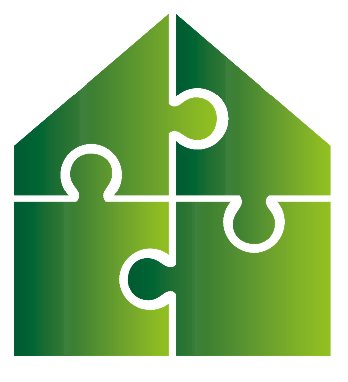
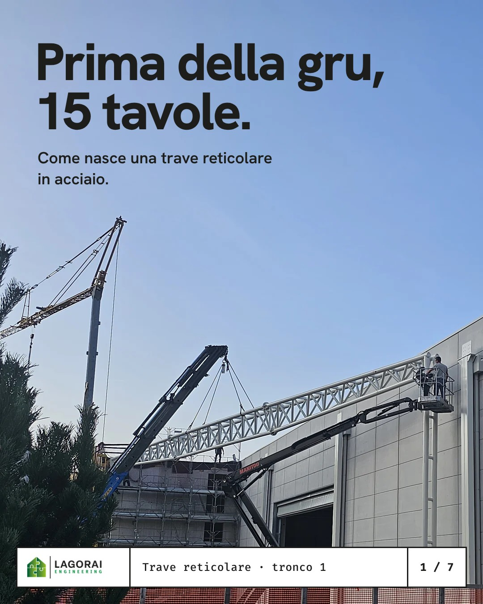
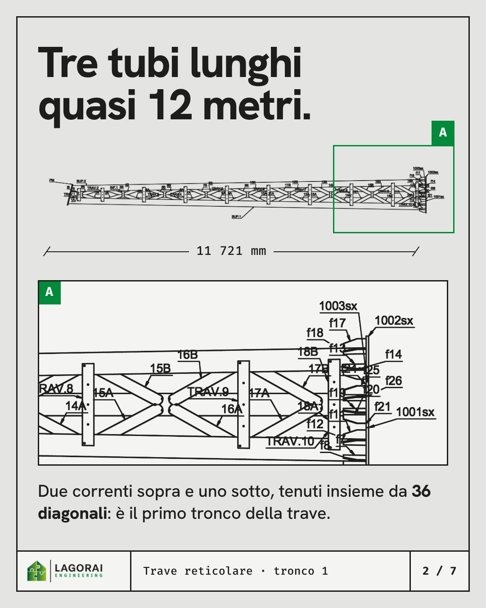
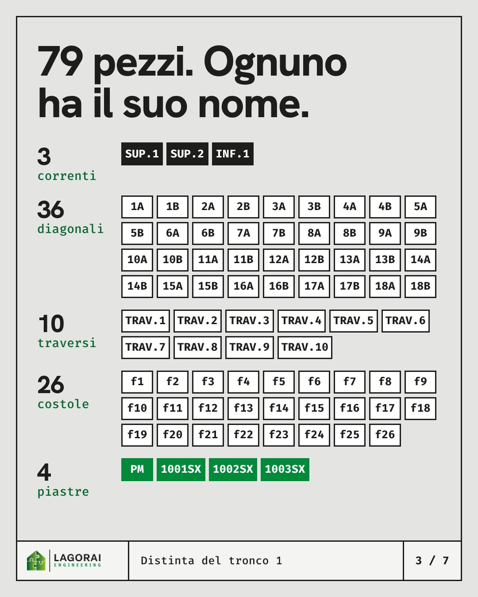
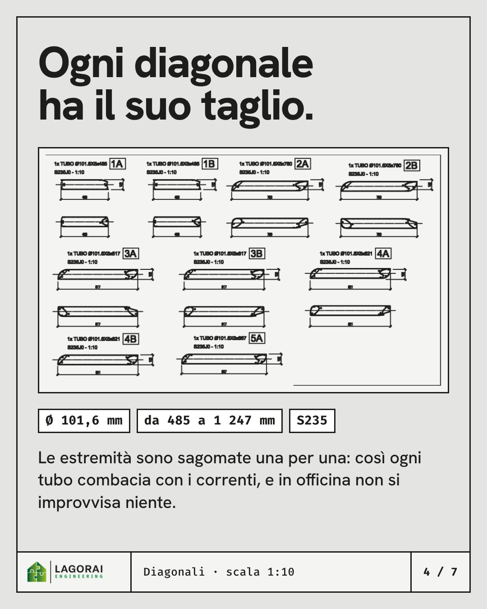
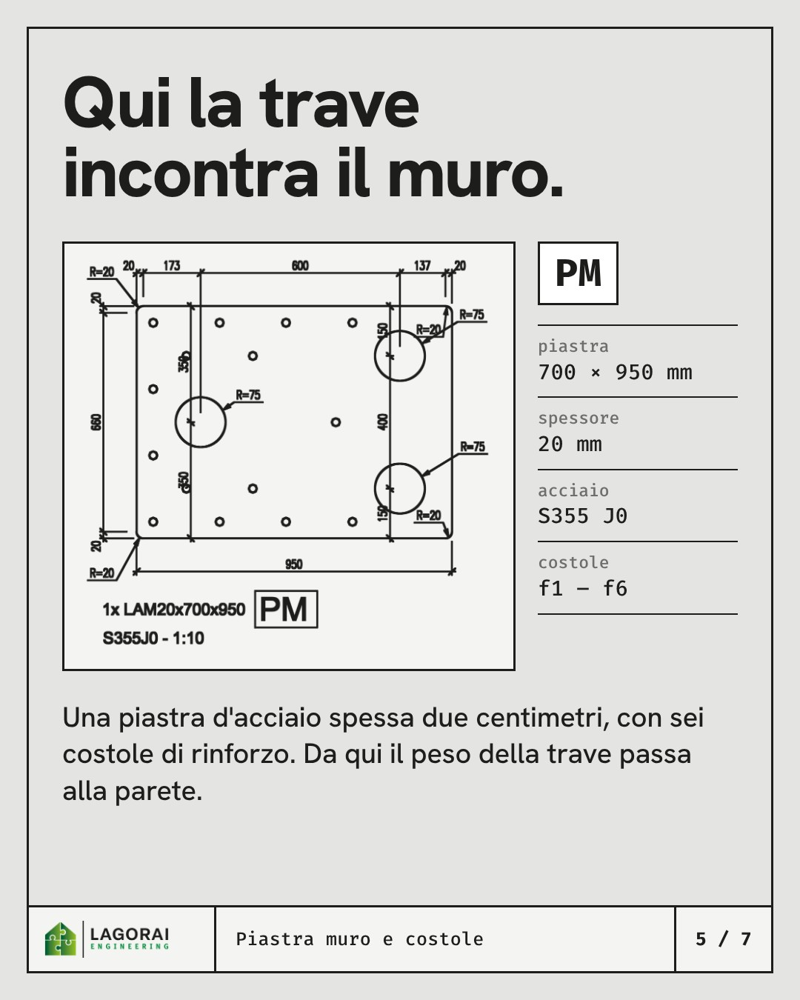
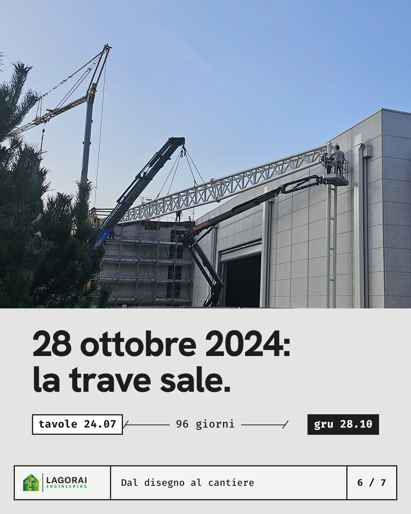
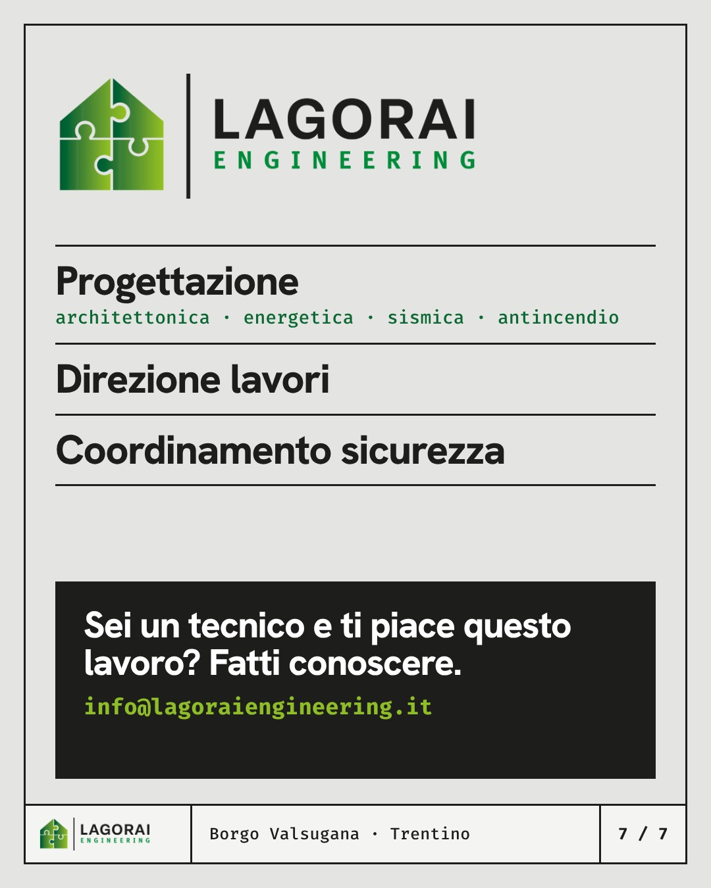

lagoraiengineering1 / 7






lagoraiengineering Prima che una gru la sollevi, una trave così passa da 15 tavole. Tronco 1: tre tubi lunghi quasi 12 metri, 36 diagonali, 10 traversi. In tutto 79 pezzi, ognuno con la sua sigla e il suo disegno, perché in officina e in cantiere non si improvvisa. Le tavole portano la data del 24 luglio 2024. Il 28 ottobre la trave era appesa alla gru.